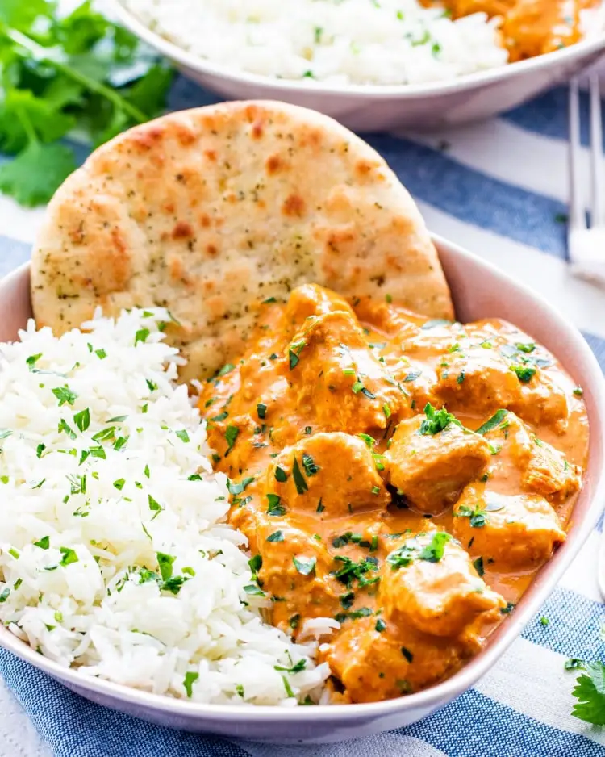

Back to home
Butter chicken

Sweet buttery christ, those are some fine looking vittles.
So you've realised now is the time in your life to get your Butter Chicken game
on point, and you have gone searching for the answers to your needs. Look no further,
as we swear this one is the big kahuna, the mack daddy, the real mc... you get it.
Read on and come with us on a journey to buttersville and ride shotgun with Mr. Naan Bread
(he's not as bad as they say).
Ingredients
- 1½ pounds chicken breast boneless and skinless, cubed
- ⅓ cup plain yogurt
- 1 tablespoon garam masala
- 1 tablespoon coriander ground
- 1 teaspoon cumin ground
- 2 teaspoon smoked paprika
- 1 teaspoon turmeric
- 1 teaspoon salt or to taste
- 6 cloves garlic minced
- 1 tablespoon fresh ginger minced or paste
- 4 tablespoon butter unsalted
- 1 medium onion chopped fine
- 1 cup passata or tomato sauce
- 1 cup heavy cream
- 1 tablespoon cilantro freshly chopped
Directions
- Add the chicken, yogurt, spices, salt, and half of each the garlic
and ginger to a large mixing bowl or sealable freezer bag. Mix
everything well and transfer to the fridge to marinate for at least
1 hour. If using a bowl, cover it with plastic wrap.
- Melt 2 tbsp of the butter in a deep skillet over medium-high
heat. Add the onion, chicken and marinade to the skillet and
cook for 5-7 minutes, until the chicken is mostly cooked through.
Stir occasionally.
- Stir in the remaining garlic and ginger. Cook for 30 seconds
– 1 minute, or until aromatic. Stir in the passata and heavy
cream, then turn the heat down to a simmer. Cook for 15 minutes,
stirring occasionally. Stir in remaining 2 tbsp butter.
- Taste for seasoning and garnish with cilantro. Serve over steamed
rice with a side of naan.
tips & notes
Store leftovers in a shallow airtight container in your fridge for 3
-4 days or in the freezer for up to 3 months! If frozen, allow to
thaw in the fridge and reheat on the stove when ready to eat!